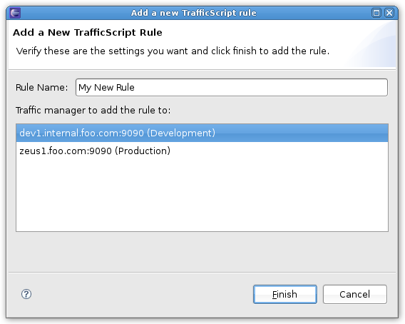

Adding a new rule is achieved by clicking the 'Add rule' icon at the top of the Zeus Viewer, or by right-clicking a Zeus project and choosing 'Add new rule to this traffic manager'. This will start the New Rule wizard shown below.
Fig.1: The New Rule Wizard
Enter the new rule name, select the Zeus project you wish to add it to, and click Finish. A rule cannot start or end with a whitespace, contain certain non-alphanumeric characters, and also must be a name that has not already been used. Any warnings or errors for the rule name will be shown in the Wizard, and must be corrected before the rule can be added.